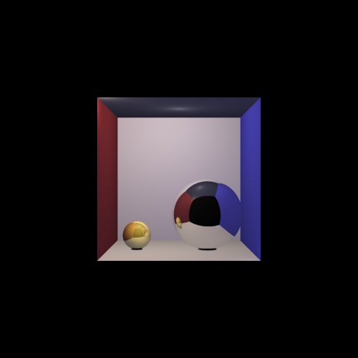

Wendy Chen
CPSC 424 Final Project, Spring 2016
Abstract
This GPU Ray tracer project seeks to address the bottleneck introduced by an image with a large amount of pixels and a high number of samples taken at each pixel. A large number of jittered samples per pixel is desired for anti-aliasing, but the render time for the image slows down by a factor of the number of samples when samples are computed in a serial manner.
The base code for this project was taken from a Javascript serial ray tracer project that I worked on during Fall 2015. Special thanks to Jakub Kowalik for pair programming to refactor the code from Javascript to C. I implemented the parallelization design and conversion of the serial ray tracer into a parallelized ray tracer in C.
In this project, I address parallelizing the pixel sampling process. Each pixel is assigned to a thread, so one thread computes all the samples for only a single pixel. I use CUDA to access the an NVIDIA GPU. The grid is created with the same dimensions as the desired image size, and the kernel assigns each thread to a pixel, based on the thread's row and column. Scene information is loaded onto each thread in this parallelization approach. Each thread safely writes the computed color into a globally shared array, which is sent to the host to be reassembled as an image.
Please see the final report for more details and final results.
The image below was used as a test image for measuring render times of the serial and parallel programs.
Compilation Details
This code compiles on MacOSX and assumes access to an NVIDIA GPU. The Cairo image library must also be installed for png generation.
Links:
Final Report